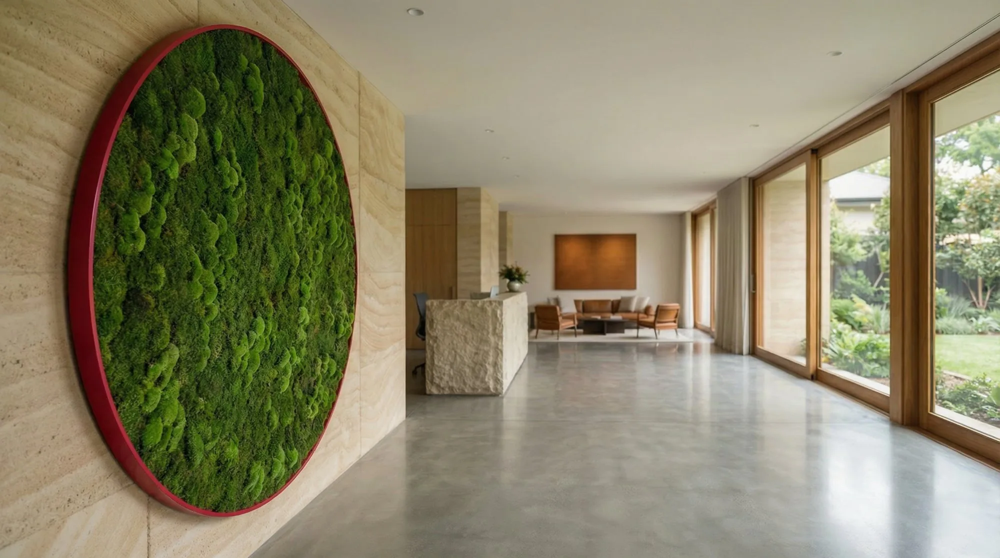
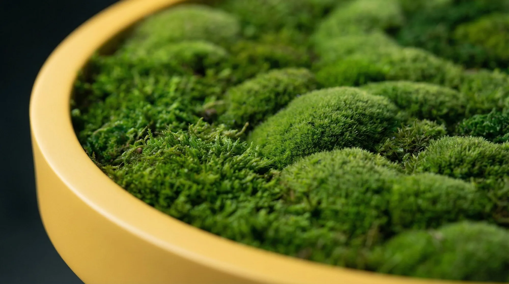
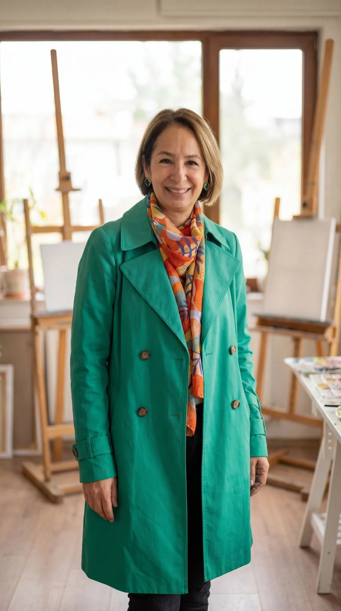

For spaces that breathe
Nature,
composed.
Botanical objects made by hand for interiors with a point of view.
↘01 / The work
Not decoration.
A living presence.
MOSU works with nature as material—preserving its texture, movement and imperfection in pieces made for a specific place.


02 / Material language
Texture first.
Form follows.
Some pieces begin with the quiet density of moss. Others start with a branch, a stem or a flash of color. Together, they make a visual language that feels natural without feeling expected.
See the moss works03 / Selected pieces
Objects with
their own gravity.
Preserved moss, branches, orchids and unexpected color—composed as singular works rather than arrangements.



04 / The studio
Beauty is
uncovered.
Ana Silva grew up in Caracas, where nature was never something you visited; it was simply where you lived. MOSU is her way of listening to that closeness—turning texture, instinct and memory into pieces that change how a room feels.
Meet Ana Silva